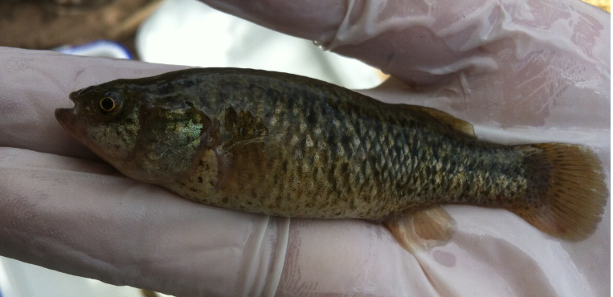

Systématique
- Ordre : Cyprinodontiformes
- Famille : Goodeidae
- Genre : Empetrichthys
- Espèce : E. latos
- Auteur : Miller, 1948

Empetrichthys latos est un petit poisson relictuel appartenant à la sous-famille des Empetrichthyinae. Originaire de la vallée de Pahrump dans le Nevada, il est le seul survivant de son genre, ses congénères (comme E. merriami) étant éteints. Contrairement aux Goodeidés mexicains, cette espèce est **ovipare** et ne possède pas de nageoires pelviennes.
Il mesure généralement entre 4 et 6 cm. Le corps est fusiforme, compressé latéralement vers l'arrière, avec une tête large et une bouche orientée vers le haut. La coloration est relativement terne, allant de l'olive au gris argenté, avec une ligne latérale sombre plus ou moins marquée et quelques taches irrégulières sur les flancs. Les nageoires sont transparentes.
L'espèce est classée "En danger" (Endangered) au niveau fédéral aux États-Unis. La population sauvage d'origine a été éradiquée en 1975 suite à l'assèchement total de sa source natale (Manse Spring). L'espèce ne survit aujourd'hui que grâce à des populations transplantées dans d'autres sources et refuges artificiels contrôlés.
Empetrichthys latos est une espèce opportuniste qui occupe principalement les zones calmes des sources et des bassins. C'est un poisson actif mais discret, qui passe une grande partie de son temps à chercher de la nourriture parmi la végétation ou sur le substrat.
Il tolère des variations modérées de température, mais reste lié à des écosystèmes de sources dont les paramètres physico-chimiques sont stables. Il n'est pas particulièrement agressif, bien que des interactions sociales soient observées lors de l'alimentation ou des périodes de frai.
Mode : Ovipare.
La reproduction a lieu principalement au printemps et au début de l'été. La femelle dépose ses œufs adhésifs sur la végétation aquatique ou les algues. Contrairement aux membres de la famille des Cyprinodontidae, les soins parentaux sont inexistants.
Le développement embryonnaire dépend fortement de la température de l'eau. Les alevins sont très petits à l'éclosion et se nourrissent de micro-organismes présents dans le périphyton. La reproduction en captivité est extrêmement rare et strictement encadrée par des programmes de conservation officiels.
Dimorphisme sexuel : Très peu marqué. Les femelles ont tendance à être légèrement plus grandes et plus rebondies que les mâles, surtout lors de la production d'œufs. Les mâles ne possèdent pas d'andropodium puisqu'ils sont ovipares.
Espérance de vie : 2 à 4 ans en milieu naturel contrôlé.
Historiquement, l'espèce habitait Manse Spring, une source isolée dans le désert de Mojave. Aujourd'hui, on la trouve dans quelques refuges comme Corn Creek (Desert National Wildlife Refuge). Son habitat se compose de bassins d'eau claire alimentés par des sources, riches en plantes aquatiques et en algues vertes filamenteuses.
L'eau est typiquement alcaline et modérément dure. Les températures de son habitat de refuge oscillent généralement entre 20 et 25 °C selon les saisons. Le substrat est souvent composé de limon, de sable et de débris organiques.
Répartition

Origine naturelle :
- États-Unis : Nevada (Pahrump Valley).
- Localité d'origine : Manse Spring (actuellement asséchée).
- Survit uniquement dans des sites de transplantation (ex: Corn Creek, Shoshone Spring).
C'est l'un des poissons les plus rares d'Amérique du Nord. Sa survie est totalement dépendante de la gestion humaine des niveaux d'eau souterraine.
Paramètres de maintenance
Note : Espèce protégée, détention soumise à permis strict aux USA.
Température : 20 à 26 °C.
pH : 7,5 à 8,3.
GH : 10 à 20 °dGH.
Courant : Nul à faible.
Volume conseillé : Non applicable au commerce (conservation d'État uniquement).
Régime alimentaire
Régime : Omnivore opportuniste.
Consomme des petits invertébrés aquatiques, des larves de diptères, des gastéropodes ainsi que des algues et des matières végétales en décomposition.